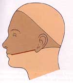
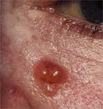
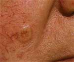
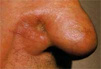
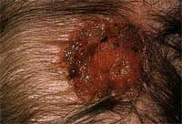
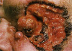
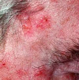
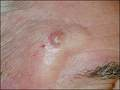
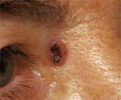
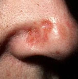

Incidence
The commonest cancer.
1/600/yr. Age
Incidence increases with age / cumulative sun exposure. Race
Fair skinned, blue-eyed, red-haird, Celtic origins.
Rare in dark-skinned races. Sex
M>F; occupational. Risk Factors Environmental Occur almost exclusively in sun-exposed skin.
AETIOLOGY
Very commonly
Sun exposure (UVB).
Very rarely
Naevoid BCC syndrome (Gorlin's Syndrome)
- presence of multiple BCC's in a young adult with palmar pits,
bifid ribs, dental anomalies and jaw cysts.
Arsenic BCC
- on skin exposed to arsenic (once common in skin lotions).
Long-term X-Ray exposure
- ionising radiation
BIOLOGICAL BEHAVIOUR
Pathology
Thought originally to arise from the basal cell in epidermis.
Probably really from pulripotential cells of epidermis /
pilosebaceous tissue.
Associated genetic abnormalities include tumour suppressor gene
mutations: PTCH1 and p53
And oncogene mutations: Ras and c-fFos
Natural History
In contrast to SCC there are no precursor lesions to these.
Slow-growing.
May be multifocal.
Almost never metastasise, but cause local invasion and penetrate
deeper tissue.
- metastasis associated with advanced age and neglected large
lesions (>10cm2)
- often have had multiple previous past excisions.
But local recurrence may be seen.
Symptoms Local
Usually nodule or ulcer that fails to heal.
May be itchy.
If neglected can ulcerate deeply causing pain, bleeding and
infection.
Commonly grow in a 'Bandit's Mask' distribution on the face - 85%
occur in head and neck, remainder on limbs, few on trunk.

Metastatic
Local nodes should not be enlarged.
Rare but possible.
Signs / Classification
26 histological varieties described
- but only a few correlate to clinically recognisable growth
patterns:
1. Nodular (50-54%)
- well defined elevated waxy lesions.
- often quite small at presentation
- develops 'pearly opalescent' nodules at margins
- a fine network of vessels ('telangiectasia') traversing the
margins (related to angiogenesis from tumour).

- classically have a central depression with 'umbilication'
- overlying epithelium is often flesh-coloured:

- some spread laterally, leaves a central scar, with raised
edges

2. Ulcerated
As lesions progress, regression may lead to an ulcer, possibly
growing deeply.
- when first ulcerating, edges are rolled (centre dies).
- base is crusted with serum and bleeds if picked.
- later it becomes irregular.

- can grow deep and destructively (AKA
rodent
ulcer):

3. Superficial
- scaly red macular patch (10-20%)
- least aggressive form
- can extend over the skin in a multicentric pattern

- where multiple small dots pepper the skin, a more aggressive
disease is active.
4. Cystic - 4-8% - distinctive translucence
- may appear bluie or gray.

5.
Pigmented - 6% - coloured brown by excess melanin.

6. Sclerosing
(morpheic)
- hard, scaly (2%).
- may be mistaken for psoriasis
- scar-like with subtle edges

7. Basosquamous
Appears likan SCC
- more likely to metastasize and treated like an SCC.
Palpate
Early lesions freely mobile.
Fixation indicates advanced lesion.
Treatment options Surgical vs 'Field
Treatment'
Field treatments work on a generalised area, but don't define
margins
Consider carefully in terms of lesion, patient and risk factors for
recurrence
Surgical excision preferable for most. Surgical
Surgical excision
Cure rate 85-95%.
Most can be safely excised to 4-5mm margins
Margins Low risk: 4-5mm
- trunk and limbs <2cm
- head and neck <1cm
- around eyes, ears, nose, mouth, hands, feet <6mm High risk: 10mm
- bigger than the above
- recurrent tumours
- immunocompromised
- in radiotherapy field
- morpheaform, sclerosing, micronodular types
- perineural invasion
If histology demonstrates tumour at excision margins (<1mm
from edge) 50% will recur.
Moh's micrographic surgery
High-risk alternative
99.5% cure rate
Serial transverse slices under frozen section until clearly free of
tumour.
- ideal under high-risk conditions of recurrence, or for anatomic
areas where preservation of tissue important (eye, nose, mouth,
ear).
RCT favours use of Moh's (just) in terms of local recurrence and
control
But is slow; takes 2-4h
Field Treatments
Cryotherapy, electrodesiccation, 5FU
Usually for small lesions (2-5mm)
Local control >90% for cryotherapy.
- heal slowly and leave a pale scar.
Radiotherapy
Highly effective for BCC and SCC
- also useful for difficult areas / skin at high risk of recurrence.
Generally reserved for elderly pts unsuitable for surgery / certain
anatomical sites.
FAQs Do I need to conduct routine follow-up
No, unless they have Gorlin's syndrome.
Excision
– Surgical
excision is preferred local treatment for majority of BCC and
SCC
—Clear margins should be
achieved with 3-5mm margin of
normal tissue.
—Mohs micrographic excision
oMohs may reduce recurrence
rate when there are risk
factors for subclinical invasion and recurrence and it is
imperative to
preserve as much tissue as possible
§Recurrent tumour
§Tumour is on the
hand/foot, genitals, in front or
behind ear, temple, mandible or chin, lip, nose, peri-orbital
region or central
face and >6mm
§Cheek, forehead, scalp or
neck and >10mm
§Trunk or extremity and
>20mm
§Morpheaform, fibrosing,
sclerosing or infiltrating
§Ill-defined clinical
borders
§Perineural invasion
§Associated with prior
radiotherapy
§immunosuppression
—
Absolute
indication if recurrence of previosly irradiated tumour
XRT
As
above
Cryotherapy
As
above
5FU
cream
Prognosis
36%
will develop
a 2nd 1° BCC within the next 5 years.